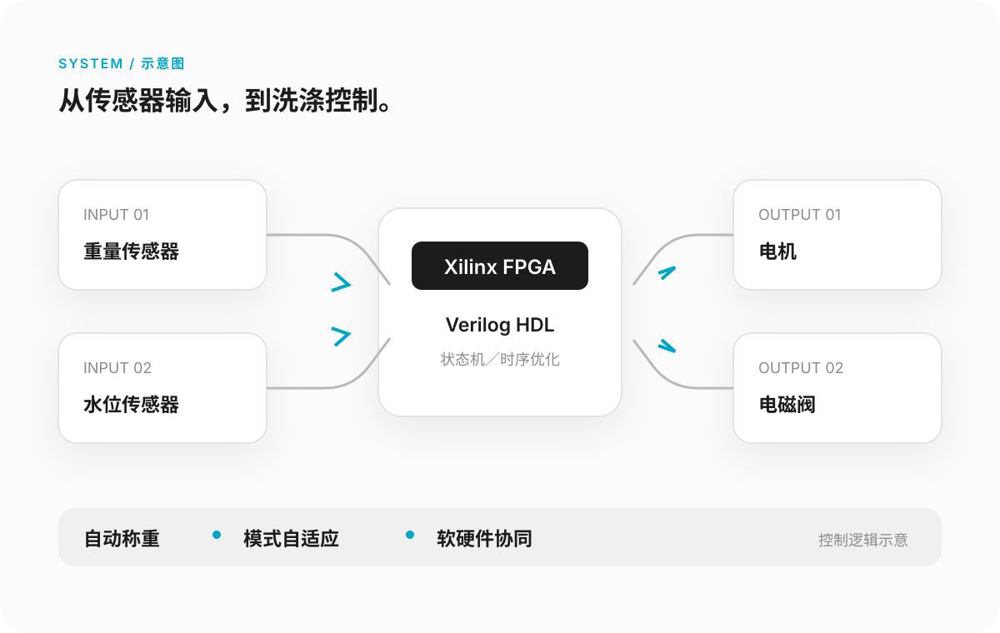

HONG SHIBOcase / about / resume把模糊需求，做成可用工具。查看代表案例 ↗ 01 / WEBSITE REBUILD个人网站重制重新定位内容、视觉与角色系统，让招聘方先看到岗位匹配度，而不是被无关信息分散注意力。信息架构原创角色响应式设计阅读案例
02 / AUTOMATION公告数据自动化使用 Chrome CDP＋Python，采集整理 311 份公告、875 条详情，并进行字段和数字核对。311份公告，形成可复用流程数据采集结构化格式校验阅读案例
 03 / FPGA CONTROLFPGA 智能洗衣机控制负责整体方案与软硬件分工，接入重量、水位传感器和电机、电磁阀，实现自动称重与洗涤模式自适应。Verilog HDL时序优化上板调试阅读案例